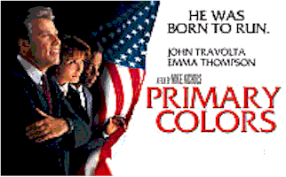
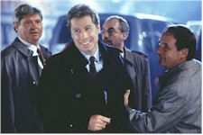
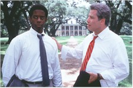

Contents | Features | Reviews | News | Archives | Store |
 |
|
| Movie Credits | Buy It! |
Primary Colors
Review by Elias Savada
Posted 20 March 1998
|  | Directed by Mike Nichols Starring
John Travolta, Emma Thompson, Written by Elaine May, |
Art imitates life imitates art imitates life in this top-notch, straight-on adaptation of the best-selling book about the "fictionalized" account of the 1992 presidential campaign. Cautionary buzz prior to the film's first screenings will evaporate quickly to make this $65-million picture a hit. Sure, Primary Colors will assuredly pull in those thrill-seeking bystanders hoping to get a taste of what's fueling the latest scandals over-occupying the White House, the media, and the public. That's a great lure for many readers of the tabloids and will certainly give distributor Universal Pictures a great chance to unseat Titanic's iron grip on the box office. But it's more – much more. You've got a great story (by "Anonymous," later revealed as Newsweek's Joe Klein) fashioned by screenwriter Elaine May, who paints characters with broad strokes and then hands them off to long-time partner Mike Nichols for sculpting. The legendary team of Nichols and May, formed in 1957, was an instant comedy hit then and are again today. The Birdcage, their first big-screen collaboration, was one of the funniest films of 1996.
And there is oodles of great acting, with former sweathog John Travolta the centerpiece as Mississippi Governor Jack Stanton, a presidential hopeful all too familiar to us as the current ruler of our nation. No, not Hillary. One too many Big Macs over the road, Travolta's slick performance totters between political sleaze and the great American hope, effectively delivering the goods that fit the Bill. Drawn to the fledgling campaign of the charismatic candidate is idealistic African American Henry Burton (British thespian Adrian Lester), whose role as deputy campaign manager (modeled as a black George Stephanopoulos) is constantly overshadowed by the ghost of Burton's grandfather, a renowned Civil Rights leader. The tongue-in-cheek tone of the film is set early as the possibly lecherous Stanton, after spinning a fanciful tale of his "war hero" Uncle Charlie for a tearful group of mentally challenged individuals (Mykelti Williamson in one of the many cameos saturating the film), apparently beds their dipsy instructor while one of the governor's advisors reports that "real progress has been made with the teachers."
Another Brit, Emma Thompson, has some strong, slap-happy scenes as the humble, iron-willed wife of the contender, while Billy Bob Thornton, fresh from a small but important appearance in The Apostle, slings himself into the off-the-wall redneck role as Stanton's brilliant political advisor Richard Jemmons (a wild take on James Carville). This unpredictable character is quickly house-broken when, attracted to a young energetic campaign worker, he decides to show his "python" to her. The only slightly disconcerted youngster has a side-bustingly sharp retort, "I've never seen one that....old."
Stealing every scene in which she appears (as she did in Titanic) is the stellar Kathy Bates. She's certifiable as former chief of staff and campaign trouble-shooter Libby Holden, a close confidante of the Stanton's extended family and one heck of an over-fried green tomato (down to the dice on her rear-view mirror). She's a mentally-challenged dust-buster who sucks up all the dirt from all those far corners of the political playroom, be it on Stanton himself (better safe than sorry), his wife's former hairdresser Cashmere McLeod (Gia Carides in the Gennifer Flowers role), or Freddy Picker (Larry Hagman), a no-nonsense former governor of Florida drawn late into the race by the death of another candidate. The discovery of certain ghosts in Picker's closet and the moral dilemma these pose for Holden (and Burton) provide some tense and somber moments that bring the comedy level down a few notches, but Holden's sudden departure from the contest arena allow for Stanton to recover his compassion and dignity in dealing with the situation.
Cinematography Michael Ballhaus (who previously teamed with Nichols on Postcards from the Edge and Working Girl) shoots the film up close and personal, occasionally setting up a showpiece with some effective lighting, as in dreamlike sequence at a Krispy Kreme doughnut house, showered in green neon as Stanton downs a few jellies and banters with the night manager. Affectionate, touching, believable. And entertaining. Primary Colors shouldn't be missed. It's got my vote.
Contents | Features | Reviews | News | Archives | Store
Copyright © 1999 by Nitrate Productions, Inc. All Rights Reserved.